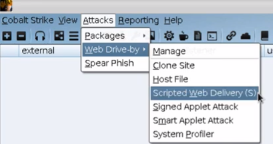

Once a listener has been established
this will let us stand a file on a webserver
it then pairs it with a one liner to download/run such file

Fill out neccessary info
One Liner
gui r paste it and youll have a shell
-----------------------------------------------------------------------
Lab example
Payload / Listener: windows/beacon_http/reverse_http
Pick 64 bit if you want